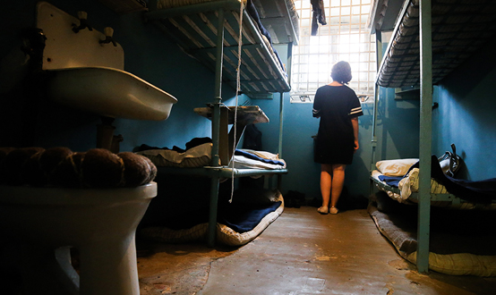

Преступления против здоровья предусмотрены статьями 111–125 УК РФ.
Объектом преступлений названной категории является физическое и психическое здоровье личности в период с момента начала жизни до ее окончания независимо от его состояния в тот или иной период существования человека.
ЦИТАТА
Здоровье — это такое состояние жизнедеятельности, которое обеспечивает необходимые условия для выполнения биологических и общественно-трудовых функций.
Объективная сторона может выражаться как в совершении активных действий, так и в бездействии (например, оставление в опасности), в результате которых утрачивается либо ухудшается здоровье потерпевшего. Абсолютное большинство составов преступлений против здоровья сконструировано по типу материальных, т.е. обязательным элементом их объективной стороны являются преступные последствия в виде утраты или ухудшения здоровья в той или иной степени. Способы и обстановка совершения в основном на квалификацию деяний не влияют, исключением являются квалифицирующие (отягчающие) обстоятельства (умышленное причинение тяжкого вреда здоровью общеопасным способом и т.п.) и смягчающие (причинение тяжкого или средней тяжести вреда здоровью при превышении пределов необходимой обороны и т.п.).
С субъективной стороны преступления против здоровья могут характеризоваться как умышленной, так и неосторожной виной. Цели и мотивы при их совершении могут быть различными, в отдельных случаях они учитываются законодателем при конструировании квалифицированных составов (умышленное причинение тяжкого вреда здоровью в целях использования органов или тканей потерпевшего, умышленное причинение средней тяжести вреда здоровью из хулиганских побуждений и т.п.).
Субъектами умышленного причинения тяжкого и средней тяжести вреда здоровью (ст. 111, 112 УК) выступают физические вменяемые лица, достигшие 14-летнего возраста, а всех прочих посягательств на здоровье — лица, достигшие 16-летнего возраста. Преступления данной категории можно разделить на следующие группы.
Причинение вреда здоровью различной степени тяжести
Под вредом здоровью понимают либо телесные повреждения, либо заболевания или патологические состояния, возникающие в результате воздействия различных факторов внешней среды: механических, физических, химических, биологических, психических.
С учетом тяжести вреда здоровью закон выделяет три вида такого вреда: тяжкий, средней тяжести и легкий. Для определения тяжести вреда здоровью должна назначаться и проводиться судебно-медицинская экспертиза, заключение которой лежит в основе выводов следователя и суда о квалификации содеянного виновным.
1) Причинение тяжкого вреда здоровью и его виды (ст. 111, 113, 114, ч. 1—2 ст. 118 УК РФ). К тяжкому вреду здоровью относят:
а) вред, опасный для жизни человека – повреждения, которые могут привести его к смерти (проникающие ранения черепа, позвоночника, грудной клетки, брюшной полости, повреждения крупных кровеносных сосудов и т.п.), заболевания и патологические состояния, представляющие угрозу для жизни человека;
б) вред, повлекший за собой: потерю зрения, речи, слуха; потерю какого-либо органа или утрату органом его функций; прерывание беременности; психическое расстройство; заболевание наркоманией либо токсикоманией; неизгладимое обезображивание лица; стойкую утрату общей трудоспособности не менее чем на одну треть или заведомо для виновного полную утрату профессиональной трудоспособности.
Квалифицирующими признаками тяжкого вреда здоровью является совершение данного деяния: в отношении лица или его близких в связи с осуществлением данным лицом служебной деятельности или выполнения общественного долга; с особой жестокостью, издевательством или мучениями для потерпевшего, а равно в отношении лица, заведомо для виновного находящегося в беспомощном состоянии; общеопасным способом; по найму; из хулиганских побуждений; по мотиву национальной, расовой, религиозной ненависти или вражды; в целях использования органов или тканей потерпевшего; с применением оружия или предметов, используемых в качестве оружия.
Особо обозначено в ч. 4 ст. 111 УК умышленное причинение тяжкого вреда здоровью, повлекшее по неосторожности смерть потерпевшего. В данной ситуации преступник не имел целью убийство потерпевшего, но должен был и мог предвидеть возможность ее наступления в результате причинения потерпевшему тяжкого вреда здоровью. Например, в ходе драки преступник избивает потерпевшего ногами по голове, отчего наступила смерть потерпевшего.
В качестве привилегированных составов предусмотрены умышленное причинение тяжкого вреда здоровью в состоянии аффекта (ст. 113 УК), при превышении пределов необходимой обороны либо при превышении мер, необходимых для задержания лица, совершившего преступление (ст. 114 УК), по неосторожности (ст. 118 УК).
Субъектом преступлений, предусмотренных ст. 113, 114, ч. 1—2 ст. 118 УК, является физическое вменяемое лицо, достигшее 16-летнего возраста.
2) Причинение вреда средней тяжести и его виды (ст. 112, 113, 114, ч. 3—4 ст. 118 УК РФ). Вредом средней тяжести считается длительное расстройство здоровья (продолжительностью свыше трех недель) или значительная стойкая утрата общей трудоспособности от 10% до 30%. Субъект — физическое вменяемое лицо, достигшее 14-летнего возраста.
Уголовный закон также предусматривает ответственность за умышленное причинение средней тяжести вреда здоровью при наличии смягчающих обстоятельств — в состоянии аффекта (ст. 113 УК); при превышении мер, необходимых для задержания лица, совершившего преступление (ст. 114 УК), а также за причинение средней тяжести вреда здоровью по неосторожности (ч. 3 ст. 118 УК). Квалифицированным видом последнего из указанных деяний является его совершение вследствие ненадлежащего исполнения лицом своих профессиональных обязанностей (ч. 4 ст. 118 УК). Субъектом всех этих преступлений может быть физическое вменяемое лицо, достигшее 16-летнего возраста.
3) Умышленное причинение легкого вреда здоровью (ст. 115 УК). Признаками легкого вреда здоровью являются кратковременное расстройство здоровья (продолжительностью не свыше трех недель); незначительная стойкая утрата общей трудоспособности (до 10%). Неосторожное причинение легкого вреда здоровью уголовно не наказуемо. Субъект — физическое вменяемое лицо, достигшее 16-летнего возраста.
Причинение физической боли, не повлекшей вреда здоровью, и умышленное заражение
1) Побои (ст. 116 УК). В уголовном порядке наказуемы только побои (многократное нанесение ударов) или иные насильственные действия (кусание, термическое воздействие на тело потерпевшего, выкручивание рук и т.п.), причинившие физическую боль, но не повлекшие вреда здоровью, совершенные из хулиганских побуждений, а равно по мотивам политической, идеологической, расовой, национальной или религиозной ненависти или вражды либо по мотивам ненависти или вражды в отношении какой-либо социальной группы, а также совершенные лицом, подвергнутым административному наказанию за аналогичное деяние, или имеющим судимость за преступление, совершенное с применением насилия (ст. 116.1. УК).
2) Истязание (ст. 117 УК) – причинение физических или психических страданий путем систематического нанесения побоев, либо иными насильственными действиями, если это не повлекло последствий, характерных для причинения тяжкого или средней тяжести вреда здоровью.
3) Заражение венерической болезнью (ст. 121 УК). К венерическим заболеваниям относятся сифилис, гонорея, паховый лимфогранулематоз, мягкий шанкр. Ответственность применяется только к лицу, знавшему о наличии у него венерического заболевания, неосторожность при совершении данного преступления исключается. Знания должны быть получены из официального компетентного источника (например, постановка диагноза врачом кожно-венерологического диспансера).
4) Заражение ВИЧ-инфекцией (ст. 122 УК). В данном случае наказуемы как умышленное заражение другого человека ВИЧ-инфекцией, так и заведомое поставление другого лица в опасность заражения ВИЧ-инфекцией (через половые контакты, несоблюдение гигиенических правил в быту, пренебрежение санитарными требованиями и т.п.). Данное преступление может быть совершено только умышленно (неосторожная форма вины предусмотрена лишь в случае заражение другого лица ВИЧ-инфекцией вследствие ненадлежащего исполнения лицом (в частности, врачом) своих профессиональных обязанностей.
Угроза причинения вреда здоровью
1) Угроза убийством или причинением тяжкого вреда здоровью (ст. 119 УК). Угроза — запугивание, обещание причинить кому-нибудь вред, зло. С точки зрения уголовного права угроза представляет собой обнаружение умысла лица на совершение преступления. Уголовно наказуема лишь угроза убийством или причинением тяжкого вреда здоровью. Способы выражения угрозы могут быть различными: устная (высказанная как непосредственно, например, по телефону, так и через посредников), письменная, путем жестикуляции, демонстрации оружия, частей тела лиц, уже лишенных жизни, и т.д. Для привлечения к ответственности необходимо также, чтобы угроза была действительной (высказанной на самом деле, а не существующей в воображении потерпевшего) и реальной (воспринимающейся потерпевшим как явное намерение виновного осуществить свое обещание лишить жизни или причинить тяжкий вред здоровью).
2) Принуждение к изъятию органов или тканей человека для трансплантации (ст. 120 УК). Изъятие органов или тканей у живого донора допустимо, только если донор свободно и сознательно в письменной форме выразил согласие на изъятие своих органов или тканей и если имеется заключение консилиума врачей-специалистов.
3) Незаконное производство искусственного прерывания беременности (аборта – ст. 123 УК). Аборт может производиться в соответствующем медицинском учреждении с согласия женщины при сроке беременности до 12 недель (до 22 недель – при наличии социальных показаний: смерти мужа в период беременности, отсутствия средств к существованию, жилья, беременности в результате изнасилования и пр.). Аборт должен осуществляться акушером-гинекологом. Нарушение установленных правил искусственного прерывания беременности превращает аборт в незаконный. Однако уголовная ответственность действующим УК установлена лишь за производство аборта ненадлежащим лицом. Если же аборт производится соответствующим специалистом, но является незаконным по иным причинам (например, осуществляется с нарушением установленных сроков), уголовная ответственность по ст. 123 УК не наступает.
4) Неоказание помощи больному (ст. 124 УК) и воспрепятствование оказанию медицинской помощи (ст. 124.1. УК). Ответственность наступает лишь при условии, что помощь больному не была оказана без уважительной причины. Субъективная сторона характеризуется виной в форме неосторожности (в виде легкомыслия или небрежности). Субъект специальный — физическое вменяемое лицо, достигшее 16-летнего возраста, на котором в соответствии с законом или специальными правилами лежит обязанность оказывать помощь больному (врач, фельдшер, медсестра). По ст. 124.1. наказуемо воспрепятствование в какой бы то ни было форме законной деятельности медицинского работника по оказанию медицинской помощи, если это повлекло по неосторожности причинение тяжкого вреда здоровью пациента и его смерть.
5) Оставление в опасности (ст. 125 УК) — заведомое оставление без помощи лица, находящегося в опасном для жизни или здоровья состоянии. Данное деяние наказуемо только при условии, что лицо имело реальную возможность оказать помощь нуждающемуся в ней, причем для него самого отсутствовала серьезная опасность (например, нельзя наказывать лицо, не спасшего утопающего, если оно само не умеет плавать), или было обязано проявлять заботу о нуждающемся в помощи (родители, педагоги и т.п.) либо само поставило его в опасное для жизни и здоровья состояние (например, руководитель туристической группы, поведший туристов по опасной тропе). Рассматриваемое преступление совершается с прямым умыслом: виновный осознает, что потерпевший находится в опасном для жизни или здоровья состоянии, что имеется возможность оказать ему помощь и что он оказать эту помощь обязан, но тем не менее желает уклониться от исполнения этой обязанности и оставить нуждающегося без необходимого содействия. Субъект специальный — физическое вменяемое лицо, достигшее 16-летнего возраста, обязанное заботиться о находящемся в опасном состоянии лице либо само поставившее его в такое состояние.